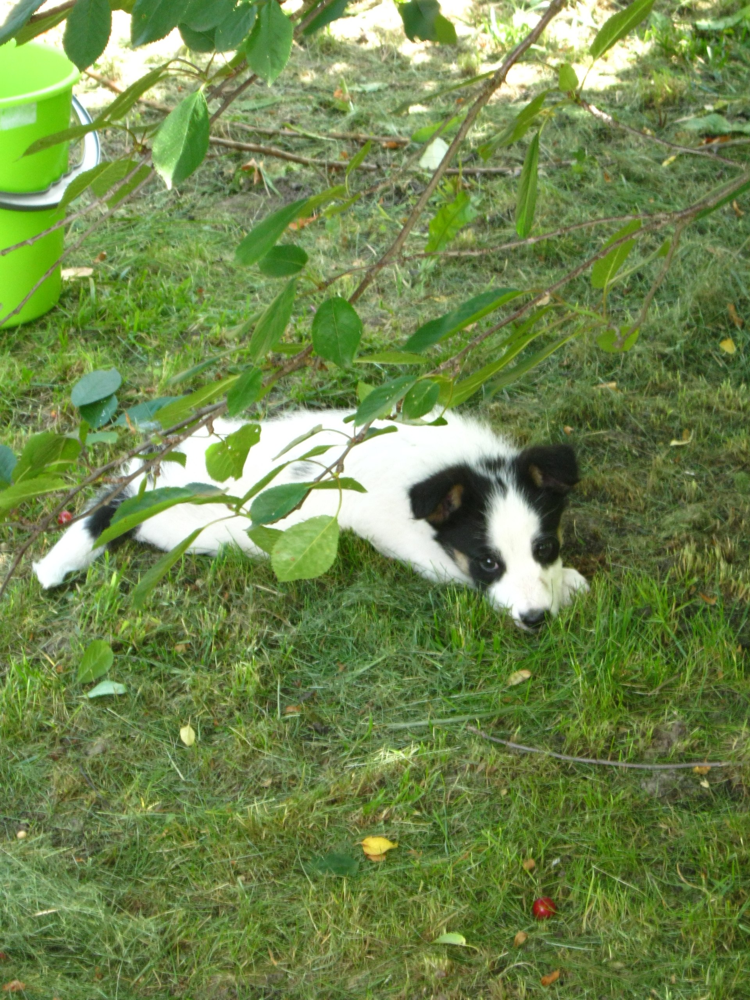
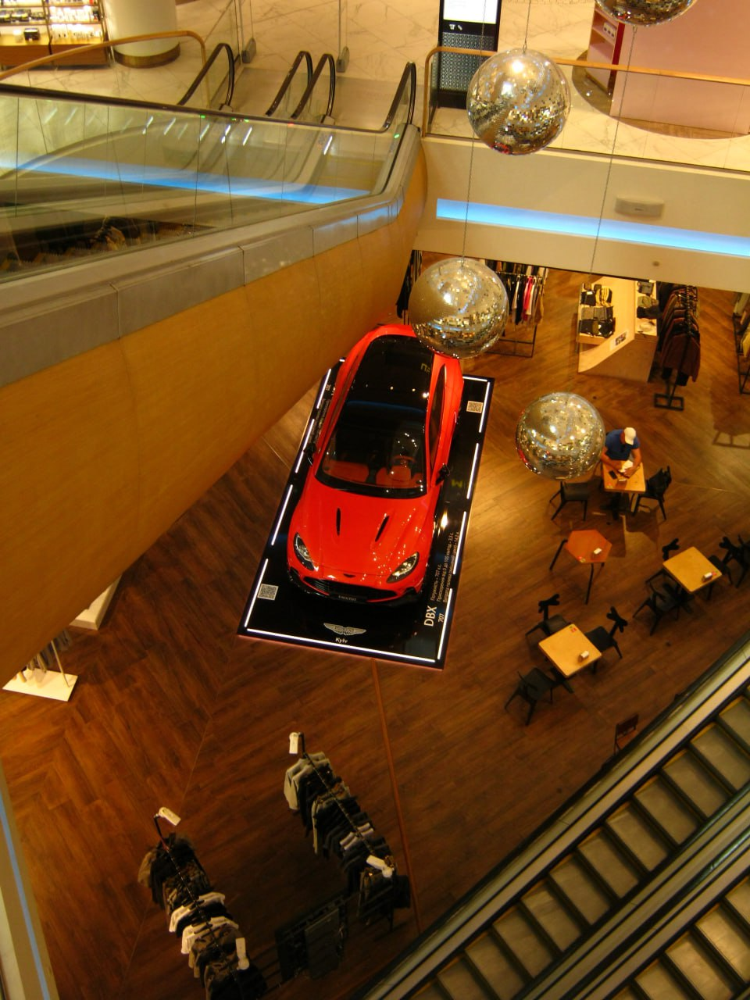
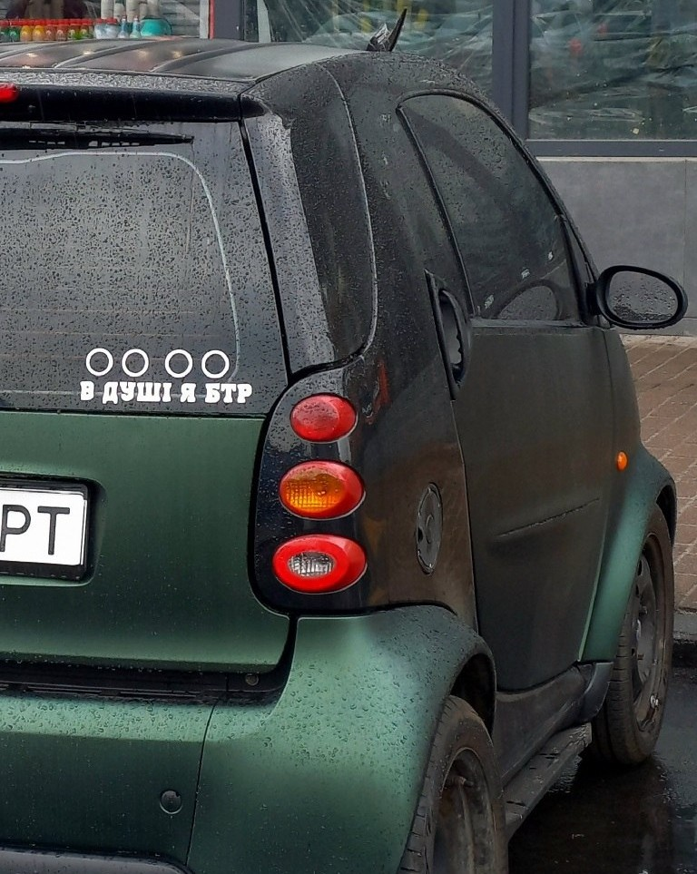
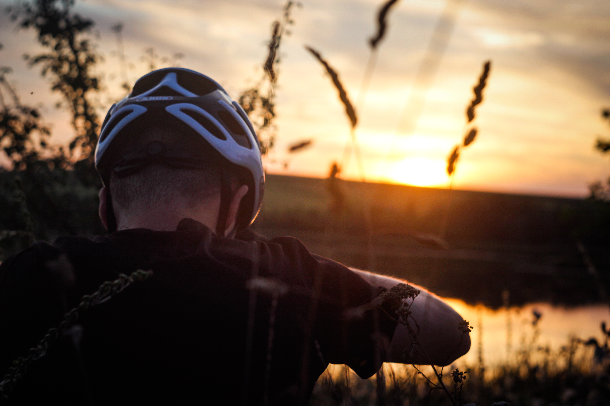
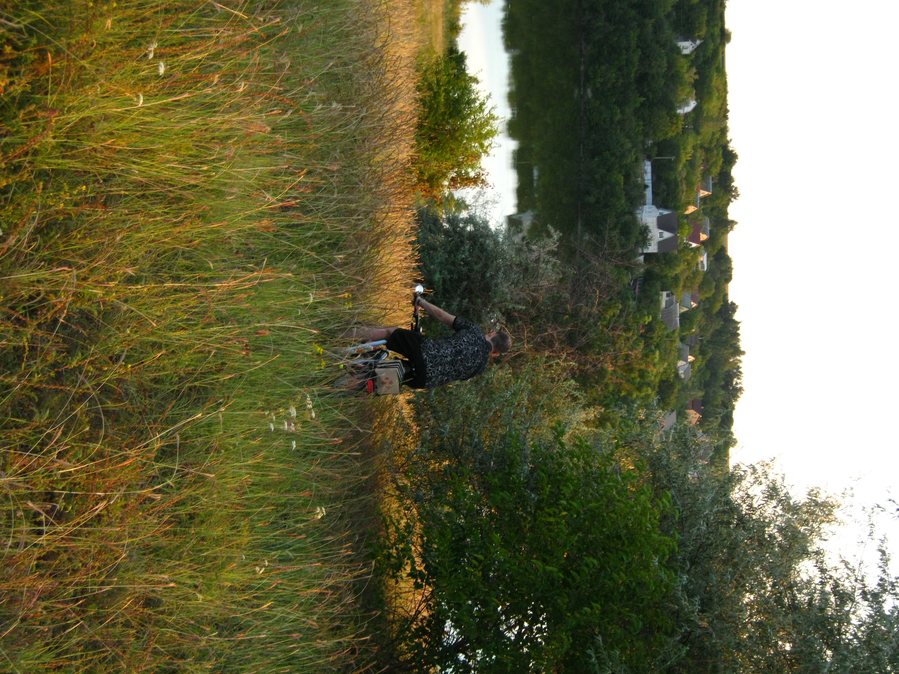

Про студію
«Frame35» — це сучасний знімальний простір та продакшн повного циклу, створений для реалізації найвибагливіших візуальних ідей. Ми допомагаємо брендам, креаторам та приватним клієнтам отримувати чистий, виразний результат — від емоційних персональних портретів до масштабних рекламних кампаній.
Наш знімальний майданчик спроєктовано для максимальної свободи роботи з кадром:
Зала Cyclorama & Light
5-метрова безшовна біла циклорама, високі стелі 4.2 м та панорамні вікна, що наповнюють простір м'яким природним світлом протягом усього дня. Ідеальне рішення для лукбуків, каталогів, тестів моделей та стильних індивідуальних фотосесій.
Зала Dark & Studio Art
Зона з фактурними темними фонами, змінними кольоровими полотнами та можливістю 100% затемнення (Blackout) для створення контрастних кінематографічних відеороликів, контенту для соцмереж і складних портретних історій.
Наші послуги
Ми беремо на себе як окремі етапи, так і реалізацію проєктів «під ключ»:
Портретна та сімейна фотографія:
Комерційний продакшн:
Відеопродакшн:
Пост-обробка:
індивідуальні портрети, зйомки стилю життя (lifestyle), сімейні та весільні історії.
зйомка лукбуків для брендів одягу, контент для маркетплейсів (каталоги, e-commerce), іміджеві фотосесії для експертів і бізнесу.
створення динамічних промо-роликів, інтерв'ю, контенту для соцмереж та реклами продукту.
повний цикл ретуші, колірне калібрування, грейдинг і підготовка матеріалу до друку чи публікації.
У студії «Frame35» кожен квадратний метр простору оптимізований для того, щоб технічні нюанси не відволікали від творчого процесу. В основі нашого продакшну лежить надійний парк студійного обладнання: швидкісні імпульсні моноблоки з миттєвим перезаряджанням дозволяють «заморожувати» динаміку без втрати різкості, а постійні LED-джерела з високим індексом передачі кольору (CRI 96+) гарантують природні відтінки шкіри та чистий відеоряд без мерехтіння. Для побудови світлових схем будь-якої складності передбачено широкий вибір модифікаторів — від м’яких октабоксів й глибоких парасолей до смугових стріпбоксів із сотами, рефлекторів і шторок. Усе це монтується на надійні важкі стійки C-Stand та журавлі, що дає змогу швидко й безпечно змінювати акценти прямо під час зйомки.
Водночас ми переконані, що якість фінального кадру безпосередньо залежить від атмосфери на майданчику та зручності всієї команди. Для підготовки образів облаштовано окрему гримерну зону з правильним нейтральним підсвічуванням дзеркал, професійним паровим відпарювачем та місткими рейлами для одягу. Під час роботи ви завжди можете зробити паузу в затишній лаунж-зоні з гарячою кавою, скористатися високошвидкісним інтернетом або підключити ноутбук до окремого робочого місця, щоб миттєво зливати вихідні матеріали й відбирати вдалі дублі разом із замовником у режимі реального часу.
Портфоліо
Під час діяльності наша студія створила багато вражаючих робіт, включаючи роботи для моделей, акторів та клієнтів з різних сфер діяльності.





Більш детально про список наших робіт можна дізнатися на сторінці портфоліо -> Переглянути портфоліо
Замовити в нас
Залиште заявку на замовлення послуги!
Контакти
Телефон: +380 123 456 789
Email: artyomsergeevich95@gmail.com
Адреса: вул. Прикладна, 35, Київ, Україна